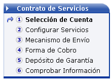
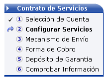
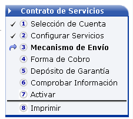
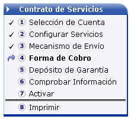
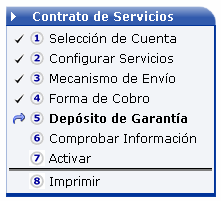
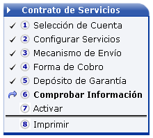
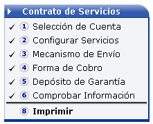

darán seguimiento al proceso de venta desde Administración
de ventas que restringirá los procesos iniciados por
vendedores asociados
a estos.
darán seguimiento al proceso de venta desde Administración
de ventas que restringirá los procesos iniciados por
vendedores asociados
a estos.Proceso
La Venta de Servicios engloba el registro de un cliente y la definición de una venta en la empresa mediante la asignación de la cuenta y productos correspondientes.
A través de este proceso funcional los vendedores registran el producto a una cuenta, que luego de ser acreditado formalmente con la documentación respectiva genera la prestación de servicios y facturación periódica en un marco contractual.
El proceso de ventas tiene un flujo preestablecido, que consta de tres tareas principales:
El registro de una venta,
La aprobación de ésta y
El ciclo de facturación. Este proceso en particular involucra solo la primera parte del mismo.
Los Agentes Autorizados darán seguimiento al proceso de venta desde Administración
de ventas que restringirá los procesos iniciados por
vendedores asociados
a estos.
El registro de una Venta de Servicios se realiza mediante un formulario o plantilla de registro especializada, dividida en las siguientes separaciones.
especializada, dividida en las siguientes separaciones.
Agrupa los datos básicos para la identificación y descripción de un cliente, este puede ser un cliente nuevo o uno existente por lo que se precargará la pantalla con los datos de la persona elegida si esta ya existe en el sistema. Captura y valida la siguiente información:
Es una relación de personas físicas que representan, en diversos aspectos.
Este registro tiene sentido únicamente cuando el cliente corresponda a
una persona jurídica. El registro corresponde a una lista
con los representantes ya ingresados, los que pueden ser editados seleccionando
el requerido o bien agregar uno nuevo; esta lista se complementa con un
mantenimiento que captura y valida:
Tipo de representante Clasifica la relación entre una persona física y una jurídica o moral.
La persona física puede ser nacional, extranjero o residente. Esta clasificación
se valida contra una lista preestablecida de valores que definen la naturaleza
de la representación.

Un cliente puede tener varias cuentas con la empresa, y en cada una de estas cuentas tener
varios paquetes o productos asignados.
En el apartado se indica en portlets
identificables la información sobre las cuentas del cliente elegido y
el proceso de creación de los contratos que amparan los paquetes vendidos.
En este
apartado existen dos portlets el primero contiene una lista de las cuentas
del cliente elegido, y el segundo con cada una de las etapas del proceso
de venta.
|
Selección de cuenta Un cliente puede tener o no cuentas existentes con la empresa, así un paquete puede ser cargado a una cuenta previa por la simple selección de ésta en la lista, o bien conformar una nueva, si el cliente no tiene cuentas se creará una nueva capturando los siguientes datos:
|
 |
|
Configuración de Servicios Define los paquetes a asociar a la cuenta y por ende el detalle de la venta por contrato de servicios. Esta asociación se realiza por la escogencia de un paquete y la definición de los detalles de los logines para la particularización de los servicios. Incluye los siguientes campos: Una vez ingresado un paquete puede elegir seguir con el mecanismo de envío o bien elegir “guardar y continuar”, en el caso de requerir otro paquete para la misma cuenta se debe guardar el servicio actual antes de ingresar el siguiente. |
 |
|
Selección de mecanismo de envío Forma de contacto epistolar para el estado de cuenta y otras notificaciones eventuales, precarga los valores que existan a partir de los datos ingresados del cliente, sin embargo estas dos informaciones son independientes. Este formulario incluye los siguientes campos:
|
 |
|
Selección de forma de cobro Indica cual es la forma de cobro a utilizar para los pagos de los servicios brindados para la cuenta. Existen tres alternativas para la gestión de pago del cliente:
|
 |
|
Cancelación de depósito de garantía, Los servicios comercializados requieren de un depósito de garantía que ampare el pago de los mismos, este depósito debe ser capturado y cubrir al menos el monto definido por el sistema. El sistema determina y presenta un monto a pagar, el cual establece la garantía económica del servicio. Se deben incluir referencias a garantías hasta cubrir al menos ese monto calculado mediante el siguiente formulario:
|
 |
|
Comprobar información Es una pantalla con el resumen de lo capturado para la formalización de la venta, de forma tal que el vendedor pueda retomar el proceso en alguna de sus tareas para corregir aspectos de captura.
|
 |
|
Activar el servicio Somete la venta al proceso de autorización y aceptación por parte de la empresa, hasta ese momento su consumo será cargado a la cuenta del Agente Autorizado. Al activar una cuenta el Agente se compromete a enviar al proceso de autorización de la empresa la documentación relacionada con la venta como el contrato y el comprobante del depósito de garantía. |
|
|
Imprimir el contrato Imprime un contrato preestablecido, tantas veces como se desee por cada
paquete en el contrato, uno de ellos servirá para recabar la firma del
cliente. Se
utiliza una lista de selección |
 |
Este apartado permite indicar el usuario de autogestión con que el Agente Autorizado accederá a las opciones del sistema. Para la asignación de un usuario se debe ingresar:
Si la persona correspondiente al cliente cuenta un usuario existente en el sistema el proceso solamente asignará los roles y permisos inherentes al nuevo rol.